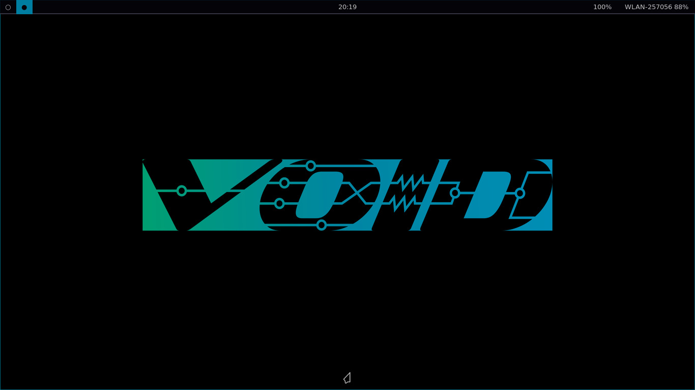
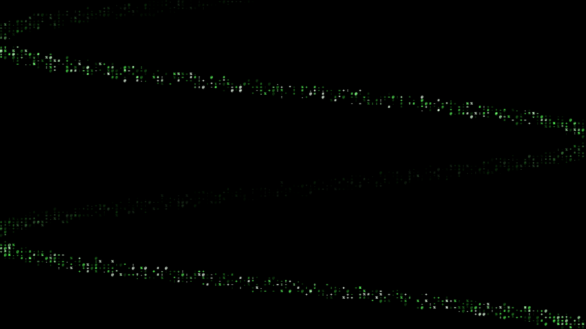
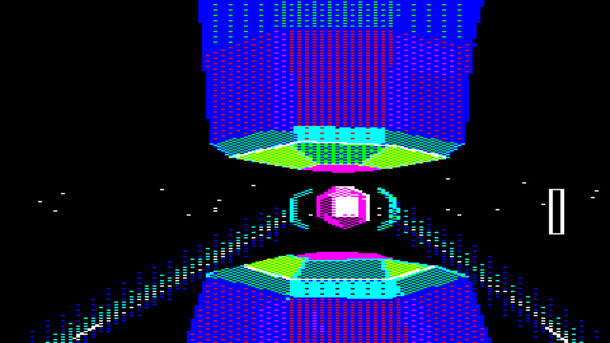
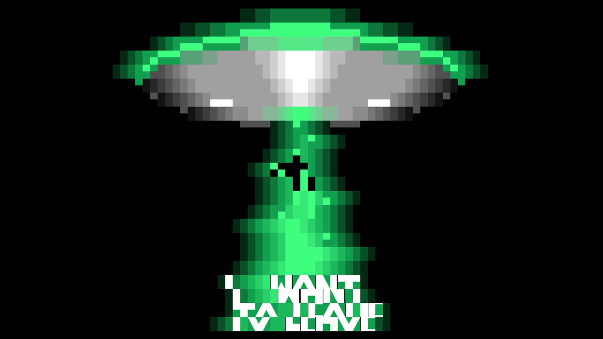
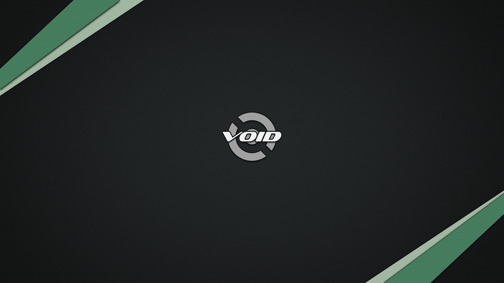

[WIP] ntr is what I call my current
Void Linux
setup on my ThinkPad X220. It aims to be very minimalistic and
efficient.
If you think I can improve it, or simply want to suggest
something cool, please do so via
matrix
or
email.
LoC
- Hardware {Specs, Setup}
- Software {Core Packages, Installing Packages}
- Configs {niri, waybar, tofi, foot, bash, micro, limine}
- Scripts
- Screensavers
- Wallpapers & Fonts
Hardware
Specs, CUZ IT TRENDY
- Model: Lenovo ThinkPad X220
- Display: 12.5" 1366x768 TN Matte
- CPU: Intel Core i5-2520M @ 2.50GHz
- GPU: Intel HD Graphics 3000
- Disk: KingSpec 256GB SATA
- Memory: 8GB DDR3-1333
Setup, CUZ IT VITAL
tony + ethernet connection + 1 cool buddy = buddy@ntr

Software
Core Packages
- Compositor/WM: niri
- Status Bar: waybar
- Launcher: tofi
- Notification Daemon: mako
- Display Manager: ly (maybe will skip the dm entirely)
- Lockscreen: waylock
- Wallpaper: swaybg
- Screensaver: mpvpaper + swayidle (in the works)
- Gamma Control: wlsunset
- Theming Engine: pywal
- Bootloader: limine (in the works)
- Audio Server: pipewire + wireplumber
- Audio Control: pavucontrol
- Terminal: foot
- Terminal Alt.: ghostty (may be too much)
- Shell: bash
- Browser: firefox HARDENED
- Browser Alt.: qutebrowser
- Browser 2nd Alt.: librewolf
- Editor: micro
- Editor Alt.: helix (in the works)
- File Explorer GUI: pcmanfm
- File Explorer TUI: yazi
- Document Viewer: zathura
- Image Viewer: imv
- Media Player: mpv
- Region Selector: slurp
- Screenshot Util: grim
- Screen Recording: wf-recorder
- Clipboard: wl-clipboard
Development tools, such as git, gcc and make, were not listed purposefully.
Installing Packages
xbps-install -S 'package-name'
Configs
Only the main, most vital configs are shown here. Oh, and not the complete files, of course. See them all (in full) at my dotfiles.
~/.config/niri/config.kdl
include "/home/buddy/.config/niri/pywal-theme.kdl"
input {
keyboard {
xkb {
layout "de"
}
repeat-delay 250
repeat-rate 35
track-layout "global"
}
touchpad {
tap
natural-scroll
dwt
click-method "clickfinger"
}
mouse {
accel-speed 0.0
}
focus-follows-mouse max-scroll-amount="0%"
}
layout {
gaps 10
center-focused-column "never"
default-column-width { proportion 0.5; }
preset-column-widths {
proportion 0.33
proportion 0.5
proportion 0.67
proportion 1.0
}
}
hotkey-overlay {
skip-at-startup
}
layer-rule {
match namespace="^swaybg$"
place-within-backdrop true
}
prefer-no-csd
screenshot-path "~/Pictures/Screenshots/Screenshot from %Y-%m-%d %H-%M-%S.png"
spawn-at-startup "waybar"
spawn-at-startup "/home/buddy/.local/bin/start-wallpaper"
spawn-at-startup "mako"
spawn-at-startup "pipewire"
spawn-at-startup "wireplumber"
binds {
Mod+Shift+Slash { show-hotkey-overlay; }
Mod+Return { spawn "foot"; }
Mod+B { spawn "firefox"; }
Mod+P { spawn "pcmanfm"; }
Mod+D { spawn "tofi-drun"; }
Mod+W { spawn "/home/buddy/.local/bin/wallpaper-menu"; }
Mod+Q { close-window; }
Mod+Shift+E { quit; }
Mod+Left { focus-column-left; }
Mod+Right { focus-column-right; }
Mod+Down { focus-window-down; }
Mod+Up { focus-window-up; }
Mod+Ctrl+Left { move-column-left; }
Mod+Ctrl+Right { move-column-right; }
Mod+Ctrl+Down { move-window-down; }
Mod+Ctrl+Up { move-window-up; }
Mod+Page_Down { focus-workspace-down; }
Mod+Page_Up { focus-workspace-up; }
Mod+Ctrl+Page_Down { move-column-to-workspace-down; }
Mod+Ctrl+Page_Up { move-column-to-workspace-up; }
Mod+R { switch-preset-column-width; }
Mod+F { maximize-column; }
Mod+Comma { consume-or-expel-window-left; }
Mod+Period { consume-or-expel-window-right; }
Mod+V { toggle-window-floating; }
Mod+Shift+V { switch-focus-between-floating-and-tiling; }
Mod+O { toggle-overview; }
Print { screenshot; }
Ctrl+Print { screenshot-screen; }
Alt+Print { screenshot-window; }
Home { spawn "brightnessctl" "set" "+10%"; }
End { spawn "brightnessctl" "set" "10%-"; }
F4 { spawn "wlsunset" "-l" "52.5" "-L" "13.4"; }
}
window-rule {
match app-id=r#"firefox"#
open-maximized true
}
~/.config/niri/pywal-theme.kdl
layout {
background-color "#04040a"
focus-ring {
on
width 3
active-color "#007EA1"
inactive-color "#535366"
urgent-color "#009A70"
}
border {
off
width 2
active-color "#00918E"
inactive-color "#535366"
urgent-color "#009A70"
}
shadow {
on
softness 24
spread 4
offset x=0 y=4
draw-behind-window true
color "#00000070"
inactive-color "#00000040"
}
tab-indicator {
on
hide-when-single-tab
place-within-column
gap 5
width 4
length total-proportion=1.0
position "right"
gaps-between-tabs 2
corner-radius 8
active-color "#007EA1"
inactive-color "#535366"
urgent-color "#009A70"
}
insert-hint {
on
color "#007EA180"
}
}
~/.config/waybar/style.css
~/.config/waybar/config
~/.config/tofi/config
~/.config/foot/foot.ini
~/.bashrc
# ~/.bashrc
# If not running interactively, don't do anything
[[ $- != i ]] && return
# Aliases
alias ll="exa -l --no-permissions --icons --color=auto"
alias ls="exa --icons --group-directories-first --long --modified --header"
alias xi='sudo xbps-install'
alias ff='fastfetch'
alias reload='source ~/.bashrc'
PS1='[\u@\h \W]\$ '
export PATH="$PATH:$HOME/.local/bin"
[ -f "$HOME/.cache/wal/sequences" ] && cat "$HOME/.cache/wal/sequences"
[ -f "$HOME/.cache/wal/colors.sh" ] && . "$HOME/.cache/wal/colors.sh"
~/.config/micro/settings.json
~/.config/micro/bindings.json
~/.config/micro/colors.conf
/boot/limine/limine.conf
Scripts
Small collection of shell scripts.
- Wallpaper + pywal theme switcher
- fc-list | tofi selector
- pkill -USR1 waybar foot mako ...
Screensavers
Some were custom made, others tuned public domain finds.
alsv1.gif Custom
- 1366x768 pixels
- 11.3 MB

alsv2.gif Custom
- 1366x768 pixels
- 12.2 MB
gema.gif Public Domain
- 1366x768 pixels
- 250.9 kB
- original, WER R U?

mc-fresher-i-want-to-leave.gif Public Domain
- 1366x768 pixels
- 320 kB
- original

Every screensaver is, in reality, a.mp4file with a resolution of 1366x768 pixels, which perfectly fits the setup.
For the purpose of showcasing, I have converted a few to.gifand imported them into this section.
Wallpapers & Fonts
I have gathered a bunch of wallpapers from
Void-Wallpapers
and
voidlinux-i3, as well as some cool fonts from
Nerd Fonts
and
GitHub.
The following list contains every font in its regular style:
- This is AnonymiceProNF
- This is CommitMonoNF
- This is DroidSansMNFMono
- This is GohuFontuni14NF
- This is HurmitNF
- This is IntoneMonoNF
- This is IosevkaTermNFMono
- This is MonaspaceArgonNF
- This is MonaspaceKryptonNF
- This is MonaspaceNeonNF
- This is MonaspaceRadonNF
- This is MonaspaceXenonNF
- This is MononokiNFMono
- This is ProFontWindowsNF
- This is ProggyCleanNFMono
- This is ShureTechMonoNFMono
- This is TerminessNFMono
And here's one of the included wallpapers, just to give you a little taste:

It is important to note that all wallpapers were first optimized with oxipng and then resized to 1366x768 using imagemagick.
The chosen 13 (actually 17, zipped) fonts and 51 wallpapers
(also zipped) can be independently downloaded by clicking the
buttons below.
Rise